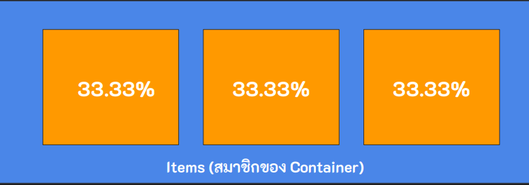

Flexbox คือเครื่องมือใน CSS ที่ช่วยให้การจัดการ element ต่างๆในหน้าเว็บ มีความง่ายและยืดหยุ่นมากยิ่งขึ้น โดยทั่วไปการจัดตําแหน่ง element ต่างๆต้องใช้ layout mode คือ block , inline , position และอื่นๆ
การพัฒนาเว็บในปัจจุบันมีความซับซ้อนมากยิ่งขึ้นทําให้การใช้ layout mode แบบเดิมไม่ตอบโจทย์เท่าที่ควร จึงได้มีการพัฒนา flexbox ขึ้นมาเพื่อจัดใช้ในการ จัดการ element ให้มีความยืดหยุ่นสูง โดยมีคุณสมบัติดังน
● จัดเรียงตําแหน่งของ element ได้ง่ายขึ้น เรียงจากบนลงล่าง ซ้ายไปขวา อื่นๆ
● กําหนดขนาดให้พอดีกับพื้นที่ว่างแบบอัตโนมัติ (Sizing)
Container (กล่องที่ครอบ Items)

.container{
display:flex;
box-sizing: border-box;
}
● flex: ให้จัดวางในรูปแบบ flex
● border-box - กําหนดขนาดให้พอดีกับพื้นที่ว่างโดยคํานวณจากค่าจริงที่ผู้ใช้กําหนด
(border + padding) เพื่อไม่ให้ item แสดงผลเพี้ยน (ระบุหรือไม่ระบุก็ได้)
● row (ค่าเริ่มต้น) จัดวาง itemsในแนวนอนทิศทางเดียวกับแกนหลัก
● column จัดวาง itemsในแนวตั้งทิศทางเดียวกับแกนหลัก
● row-reverse จัดวาง itemsในแนวนอนทิศทางตรงข้ามกับแกนหลัก
● column-reverse จัดวาง itemsในแนวตั้งทิศทางตรงข้ามกับแกนหลัก
● nowrap จัดวาง items ที่เกินพื้นที่ container ไปด้านขวามือ
● wrap จัดวาง items ที่เกินพื้นที่ container เรียงจากบนลงล่าง
● wrap-reverse จัดวาง items ที่เกินพื้นที่ container เรียงจากล่างขึ้นบน